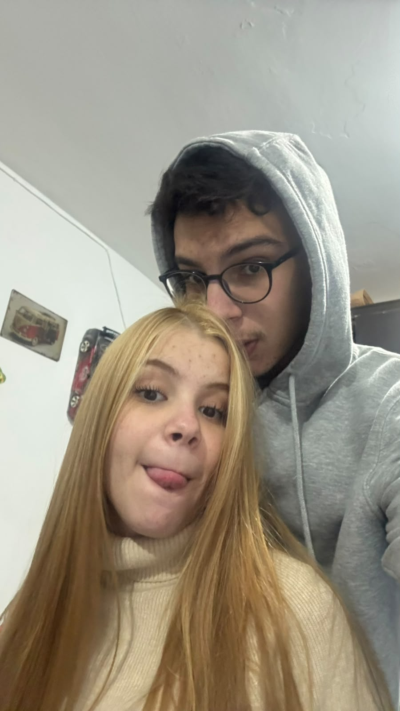

Topa ser meu amor
em todos os próximos dias?
Sem pressão. Só pelo resto da vida. :)
Pode tentar o “não”. Por sua conta e risco.
DESDE 10 DE OUTUBRO DE 2024
Nicolly, você é a mulher da minha vida. Fiz esse cantinho pra guardar um pouco do que a gente é — e te lembrar que eu escolheria você de novo. Em cada um desses segundos.
e o meu amor continua aumentando.
ps.: tem um pouquinho de saudade aqui também.
três lembranças. mil borboletas.
ALGUNS INSTANTES MUDAM TUDO
Um registro, um beijo, uma escolha.
E tanta vida boa pra viver com você.
Deslize e relembre o nosso começo
Sem pressão. Só pelo resto da vida. :)
Pode tentar o “não”. Por sua conta e risco.
Construí um medidor. Acho que ele aguenta…
Spoiler: talvez falte espaço no medidor.
com você, até um dia comum vira uma lembrança boa.
A lista é grande. Pode clicar de novo.
BOBEIRINHAS QUE EU FARIA SÓ COM VOCÊ
Escolhe um cantinho. Tem carinho escondido em todos.
Como tá esse coração aí?
Três envelopinhos. Todos com seu nome. ♡
Toque nas cartinhas e encontre três pares de lembranças nossas.
Sem pressa. As melhores lembranças merecem um segundo olhar.
Essa flor sabe de uma coisa. Tira as pétalas pra descobrir.
Spoiler: plantei essa flor pensando em você.

aqui, eu tô em casa.UMA CERTEZA NO MEIO DE TANTA COISA
Porque o melhor dos meus dias não é um lugar.
É quem divide esses dias comigo.
LEMBRANÇAS. E TANTAS OUTRAS PRA VIVER.
guardaria todos com você.
Cada foto, um motivo para sorrir. Toque para abrir.
O tempo passa. Você fica.
Hoje, amanhã e em todos os nossos ainda.Esse coração guarda um segredo. Insiste um pouquinho.